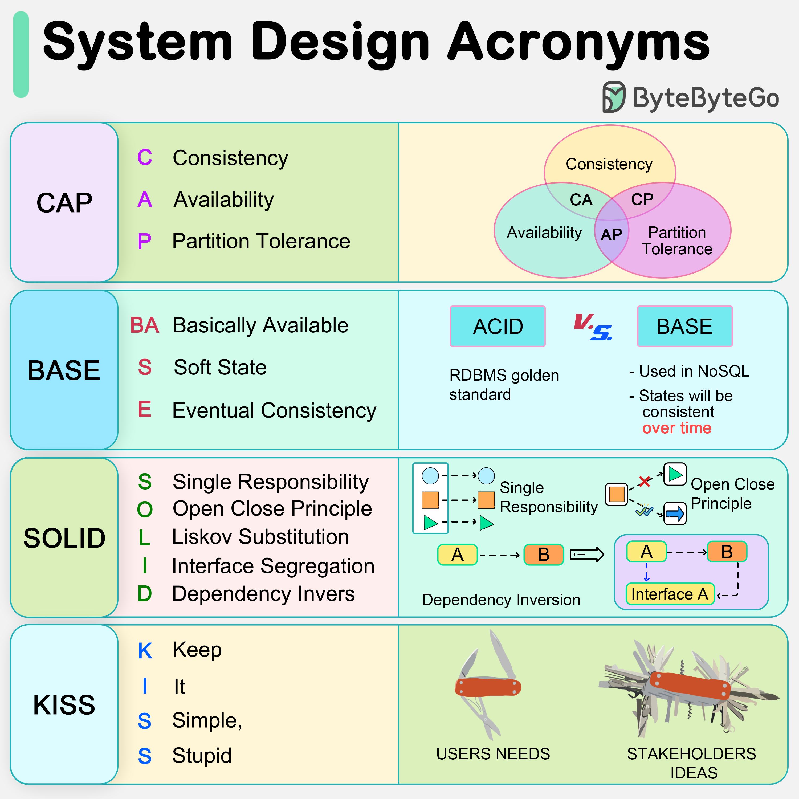

The diagram below explains the common acronyms in system designs.

CAP
CAP theorem states that any distributed data store can only provide two of the following three guarantees:
However, this theorem was criticized for being too narrow for distributed systems, and we shouldn’t use it to categorize the databases. Network faults are guaranteed to happen in distributed systems, and we must deal with this in any distributed systems.
You can read more on this in “Please stop calling databases CP or AP” by Martin Kleppmann.
BASE
The ACID (Atomicity-Consistency-Isolation-Durability) model used in relational databases is too strict for NoSQL databases. The BASE principle offers more flexibility, choosing availability over consistency. It states that the states will eventually be consistent.
SOLID
SOLID principle is quite famous in OOP. There are 5 components to it.
SRP (Single Responsibility Principle) Each unit of code should have one responsibility.
OCP (Open Close Principle) Units of code should be open for extension but closed for modification.
LSP (Liskov Substitution Principle) A subclass should be able to be substituted by its base class.
ISP (Interface Segregation Principle) Expose multiple interfaces with specific responsibilities.
DIP (Dependency Inversion Principle) Use abstractions to decouple dependencies in the system.
KISS
“Keep it simple, stupid!” is a design principle first noted by the U.S. Navy in 1960. It states that most systems work best if they are kept simple.